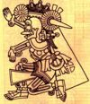

De: La Frikipedia, la enciclopedia extremadamente seria.
De: La Frikipedia, la enciclopedia extremadamente seria. De: La Frikipedia, la enciclopedia extremadamente seria.
| De la serie imperios antiguos: | |||||
| Aztecatlahtocayotl | |||||
| |||||
| Lema: "NINEKI IEZTLI!!!" (¡Quiero tu SANGRE!) | |||||
| Himno: N tlahtocayotl mitzneki ("El imperio te quiere") | |||||
|
| |||||
| Capital(es) | Tenochtitlan (única y exclusivamente) | ||||
| Mayor ciudad | Tenochtitlan (Dije: ÚNICA Y EXCLUSIVAMENTE) | ||||
| Lenguas oficiales | Náhuatl | ||||
| Religión oficial | | ||||
| Gobierno | Monarca déspota absolutista elegido democráticamente | ||||
| El güey del Tlatoani (del Náhuatl:"El único güey que habla") |
Vacante en la actualidad | ||||
| Fecha de fundación | 1325... o 27 | ||||
| Caída | 100 años después | ||||
| Edad de oro | pos como a los 25 años de la fundación | ||||
| Periodo de Estancamiento o reseción | pos como a los 95 años de fundación | ||||
| Máxima Extensión | Menos del 20% del país donde 99.9% de los habitantes afirman ser sus descendientes y sólo el 5% lo es | ||||
| Forma de economía | Tributos, chocolates y plumas | ||||
| Estados que se despacho | Toditita Mesoamérica (a excepción de la parte que le arrendaron a los Mayas) | ||||
| Población calculada | 2.5 millones de nahuas (en 1520 y en el 2000) | ||||
| Moneda | Pluma de Quetzal dividida en 10 semillitas de Cacao | ||||
| Zona horaria | La misma que Acatlán de las Manzanas y Cacaxtla de las Tunas | ||||
| Legado(s) | | ||||
| ¿Por que se vino abajo? | Los Aspañoles y su supercherías mágicas como la polvora y los caballos | ||||
| | |||||
El Imperio Azteca eran unos adoradores de Batman y Quetzalcóatl, de entre los siglos I, II, III, y los XVI y XVI namás pa' que los destruyeran los españoles y sus enemigos indios, sobre todo éstos últimos.
Los aztecas eran una civilización salvaje y caníbal avanzada en todos los aspectos. Tenían una esperanza de vida de hasta 45 años por peleoneros.
Los Aztecas aparecieron de la nada hace muchos años llevados por su guía espiritual Hutzilopochtli y su sacerdote Tenoch.
Luego Huitzilopchtli les dijo que aquel que no le fuera al Club América se jodía; entonces, para celebrar el decreto, fundaron una ciudad donde vieron un águila comiendo tunas, y es así que, con la gloria futura predestinada, se fundó "Tenochtitlan", que habría de convertirse en la ciudad de México (ver imagen).
200 años después le empezaron a echar tierra al lago de Texcoco, eso les permitió hacer pirámides como las del Antiguo Egipto, y por eso se enojó el faraón.
Como los Aztecas eran bien peleoneros, fueron y atacaron a los egipcios, no lo lograron por que ya que llegaron se dieron cuenta que ya no había egipcios.
Con su primer Rey "Tizoc el indio" aprendieron a volar (para los incultos que no lo sepan, los aztecas podían volar).
La civilizacion azteca llego a su fin el viernes 13 de agosto de 1521 cuando un tal Hernán Cortés capturó al ultimo Huey Tlatoani: Cuauhtémoc (del nahuatl "águila que ya se chingó")
En la opinión de "El Fisgón" comentarista político mexicano, si los aztecas hubieran conquistado España, esta se llamaría Expaña o Nuevo Aztlán o Nueva Tenochtitlán, y hubieran obligado a los hispanos a bañarse dos veces al día, a tragar camote, enchiladas y tacos de nopales... o posiblemente se le hubiera aparecido el indio Juan Diego al pastor Felipe Erreconerrechea para pedirle un templo dedicado a la Madre Tonantzin ( a falta de una virgen de Guadalupe) y Barcelona se llamaría Parangaricutiro.
Los Aztecas regían sobre un vasto imperio una vasta red de ciudades tributarias.
El puño de hierro era ejercido equitativa y racionalmente por el güey del Tlatoani (del Náhuatl: "El único güey que habla"); una especie de "Monarca - militar - sacerdote - teócrata - déspota - absolutista - máximo jefe de las fuerzas armadas y el clero" elegido democráticamente cada generación para un periodo vitalicio y que hubiera sido el sueño húmedo de cualquier mussoliniano, ayatollah o pepero.
En esto aspecto los aztecas eran un pueblo sencillo. Amantes de las cosas simples de la vida tales como las flores, la poesía destripar al enemigo y el canto, los aztecas gustaban de encomendarse a diversas deidades, a saber:
| Imagen | Nombre | Atributos | Castigo |
|---|---|---|---|
| Huitzilopochtli ("Huchilobos" para los aspañoles) |
Guerra y Sol; patrono de los aztecas | Si no le ofreces toneladas de sacrificios y no lo alimentas con sangre, el sol se apaga (¬¬) | |
| Quetzalcóatl | Creador de la humanidad y la civilización; patrono del gobierno, sacerdotes y mercaderes | No requiere sacrificios y no te echa el mal de ojo, todo un liberal de izquierda para la época | |
| Tezcatlipoca | Es la contraprte de Quetzalcóatl; Patrono de Hechiceros, guerreros, discordia, conflictos, noche, muerte, oscuridad y además si le pinchas en la imagen confirmaras que te esta mirando feo | Realmente (REALMENTE) no quieres saber que pasa si no le rindes culto a este | |
| Tlaloc | Agua, ríos, lluvia y fertilidad | Si no le rindes culto te cae el diluvio y te parte un rayo (literalmente) | |
| Chalchiutlicue | Esposa de Tlaloc, diosa del agua y canto | Si no le rindes culto un río te lleva como a los tíos de la imagen | |
| Xochipilli | Fiestas, bebidas, poesía y canto | Si no le rindes culto te manda enfermedades | |
| Coatlicue | Naturaleza, madre tierra, creadora y destructora | Si no le rindes el culto te jodes, así de sencillo | |
|  | Mictlantecuhtli | Shinigami máximo de los Aztecas; señoron de la muerte y del inframundo | Si no le rindes... bueno ya entendiste la idea |
| Xocaplic (Pico para los amigos) |
Chocolate, o sea, droga | Si no le rindes culto irá a un campo de trigo, y BUM! Lo convertirá en Chocapic! |
Resultado inmediato de mezclar religión y gobierno. Eran guerras que organizaban cada año para obtener sacrificios frescos y evitar contraer mariconitis aguda.
Entre los aztecas el sacrificio era como la navidad, sólo que era más roja y se hacía diario. También puede llevar uno a cabo en la comodidad de su propio hogar, sólo necesitaremos:
Ahora podemos proceder...
Y es así como tendremos a un dios alimentado y feliz que mantiene el universo un día más andando como relojito suizo ^^.
Pasos finales opcionales:
Aunque el sacrificio se puede llevar a cabo a cualquier hora lo tradicional es hacerlo al mediodía.
1 Tome en cuenta que no todos los gobiernos modernos ven con buenos ojos este paso
Los aztecas eran aventajados en cuestiones tecnológicas, entre otros avances tenemos:
Entre otros de sus artilugios tenemos:
Merece especial mención la rueda, ya que fueron los aztecas quienes la descubrieron (Si, así es fueron ellos); resolviéndose así un misterio de siglos sobre la paternidad de dicho invento. Sin embargo, ¿Cómo es que los investigadores saben que los aztecas son los inventores originales de la rueda?... ¿Sabes de alguna otra civilización que conocía la rueda y nunca la uso para algo de más 10 gramos de peso?
En este aspecto los aztecas seguían el modelo chino: "si se mueve cómelo". Así tenemos: mosquitos, perros, víctimas de sacrificio, patos, grillos, nopales y una que otra cosa sin clasificar.
Y recuerda asombrar al profesor de historia: Los Aztecas podían volar
Autor(es):